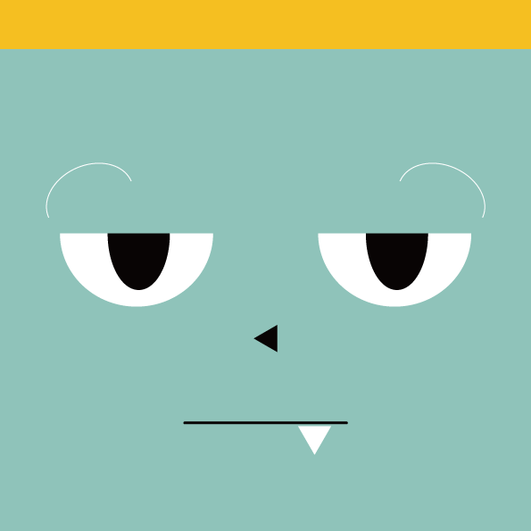
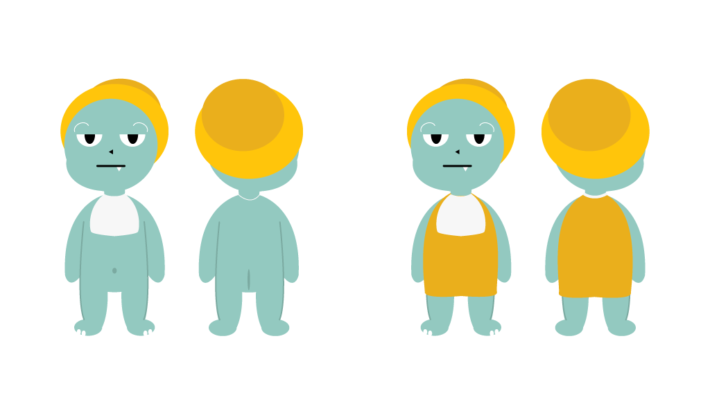

-울산 공룡축제를 알리는 새로운 울산의 대표 캐릭터
-과거 울산에 살았던 초식.육식 공룡을 모티브로 캐릭터화
- 두 아기 공룡 캐릭터들을 활용한 상품화+홍보에 용이
-어린 아이부터 어른까지 사랑받는 캐릭터 디자인
 울산 유곡동에 사는 룡이는 까칠하지만 다정한 육식 공룡입니다.
조용하고 도도한 룡이는 책을 읽거나 무엇인가를 만드는 것을 좋아합니다.울산 천전리에 사는 콩이는 귀여운 초식 공룡입니다.
호기심과 탐구심이 많은 콩이는 산책을 하거나 나가 뛰어노는걸 좋아합니다.
다른 아기 공룡 친구들을 좋아해서 쫓아 다니기도 한답니다.
다른 흥미로운 것이 있으면 갑자기 어디론가 사라져 버리기도 하니 놀라지 마세요!
호기심이 많아 사고도 많이 치지만 사랑스러운 아기 공룡입니다.